Tools Setup Differences
Harmony MHC Component Blocks
MPLAB-X Harmony 3 projects only have one associated configuration. When each Harmony 3 project is created the MPLAB-X Harmony Configurator (MHC) will support application driver and library code generation for the selected processor.
Additional, MHC code generation is supported by adding additional components to the project graph. This includes Core peripheral support for the processor device, the Harmony framework, and the board support package.
The USB Headset application will be generated from the following MHC Project Graph after each block's component parameters are configured.
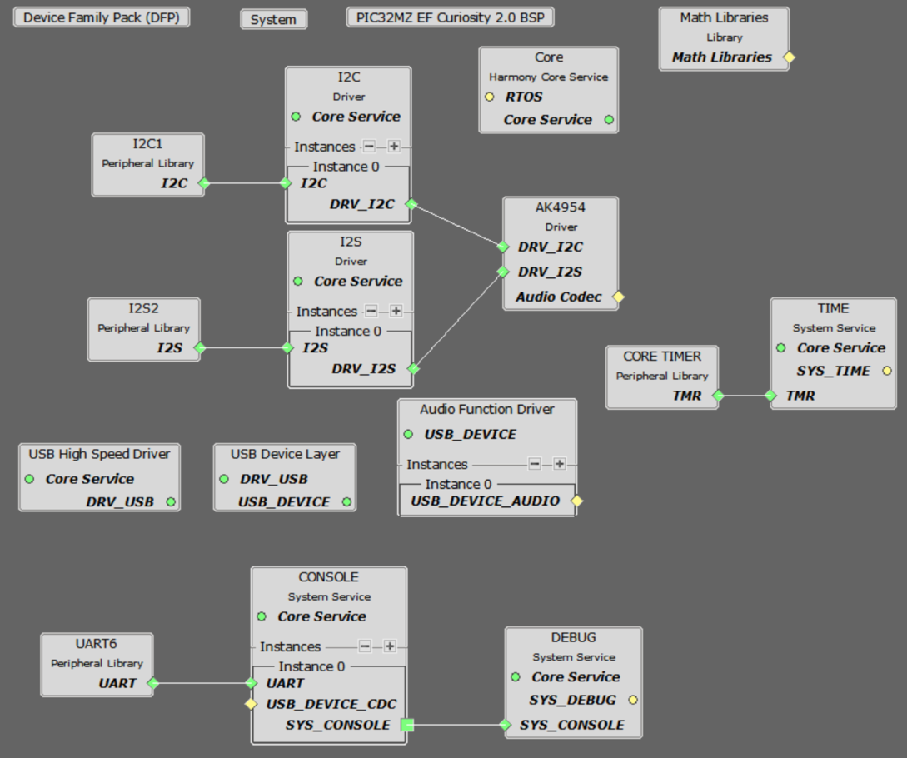
Figure 9. USB Speaker Project Graph for the PIC32 MZ EF Curiosity 2 Board
The creation of this Project Graph and the configuring of each components will be described in the following Sections.
Harmony Core Block
Start MHC for the project in order to add the Harmony and the application code components. The Board Support Package (BSP) for the Pic32 MZ EF Curiosity board should be selected first from the Available Components.
Next, the Harmony core is selected without FreeRTOS. Answer Yes to all questions except for the one regarding FreeRTOS; answer No to that one.
USB Audio Component Blocks
The MHC USB Audio Stack component blocks can added by selecting the Libraries/USB/Device Stack/Audio Function Driver component template under the MHC Available Components list, as shown below.
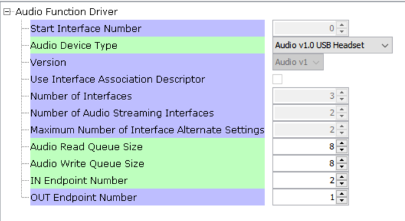
Figure 2. USB Headset USB Audio Function Driver Selection
Answer yes to all questions. This allows the generation of the USB High Speed Driver, the USB Device Layer and Audio Function Driver components.
AK4965 Daughter Board Component Blocks
Under Audio\Templates, double-click on AK4954 Codec Template (shown below). Answer Yes to all questions. This loads the AK4954 Codec component along with associated I2C, I2S and timer driver components.

Figure 3. USB Headset AK4954 Codec Selection
Debug Console Output
Debug output to the console is sent to UART6 using the PKOB4 USB connections as a virtual com port on the PC. This is the same USB connection used to program the device. Three components block have to be added to the diagram: UART6, Console and Debug. These can use the default configuration settings.
Harmony Code Configuration Options
Each block in the MHC Project Graph may need to be configured through parameters for the specific application. These parameters are accessed by selecting the block with the mouse, and appear in the Configuration Options window, where they can be edited. The next section describes the configuration of the USB, Math, and Codec component blocks for the USB Speaker with “Bass Boost” application.
USB Configuration
The application uses USB Library as a "Device" stack, which will connect to a "Host". The USB High Speed Driver is set to “Full Speed”, V1.0 interface (not “High Speed”, V2.0 Interface):
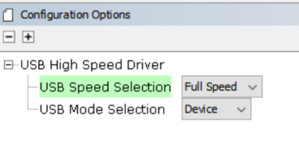
Figure 5. USB Headset USB High Speed Driver Peripheral Configuration
The USB Device Layer is configured by selecting Product ID Selection as “usb_headset_multiple_sampling_demo” with an endpoint buffer size of 64 (bytes). The Product String Selection is changed to “Harmony USB Speaker w/Bass Boost Example”. This information will be used to generate the fullSpeedConfigurationDescriptor array variable structure (located in initialization.c under the config folder) that defines the enumeration of device functions with the USB Host. This structure defines the connection to the host at 48 kHz with 16 bit stereo channel data.
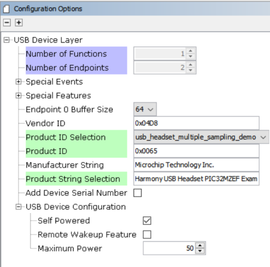
Figure 6. USB Headset USB Device Layer Configuration
The Audio Function Driver is configured with an Audio Read Queue that matches that of the codec driver write queue for this Audio V1.0 USB Speaker interface.
A playback packet queue of length 8 is set with the Audio Read Queue Size. The Audio Write Queue Size should be the same (8), which should also match the Audio Write Queue Size of the I2S driver. The The maximum USB write packets size is set to 48 * 2 channels/sample * 2 bytes/channel= 192 bytes, which gives a 1ms stereo sample packet size at 48Khz (the standard data frame length at this rate), thus the read buffer size needs to be of the same size. The write buffer size should be half of this (96 bytes), since the 1ms write buffer only contain single channel (mono) audio data at the 48Khz rate at the same bit resolution (16 bit).
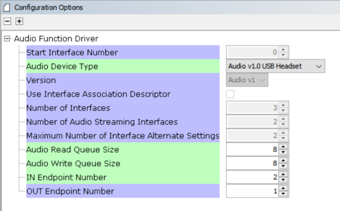
Figure 7. USB Headset USB Audio Configuration
The AK4954 Codec
Using the MZEFC2 and the AK4954 Audio Codec Daughter Board:
The AK4954 codec uses a I2C interface for configuration and control register setting and SPI interface configured as I2S. The settings are shown below.
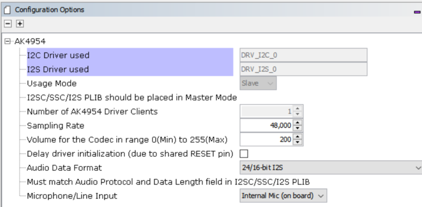
Figure 8. USB Headset AK4954 Codec Configuration
The I2S Driver uses a transfer queue size of 8, which applies to both read and write channels, and matches that that of the USB Read/Write Queue length:
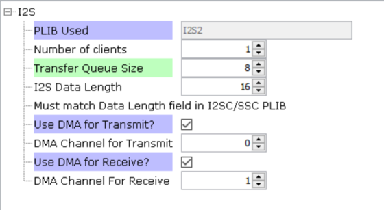
Figure 9. USB Headset I2S Driver Configuration
When the I2S2 driver is used for DRV_I2S_0 the codec usage mode automatically changes to “Slave”
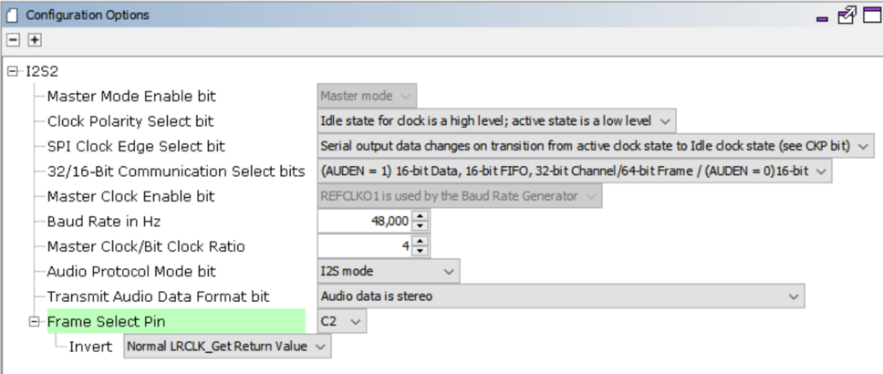
Figure 8. USB Headset I2S Peripheral Driver Configuration
The I2C blocks can be used without changes to the configuration
Table 1. USB Headset Pic32 MZ Curiosity 2 Pin Configuration
Clock Manager
PIC32 MZ EF PLL Clock
The CPU, Memory and Peripheral clock are generated from the 198Mhz PLL Clock, as configured below.
The I2S clocks are setup for 48KHz sampling rate, with stereo 16 bit samples, giving a 32 bit sample frame. The I2S clocks will be generated, as follows:
| I2S Function | Value | Description |
|---|---|---|
| LRCK | 48.000000 K | Stereo Sample rate clock |
| BCLK | 3072000 Hz | Bit Rate Clock |
| MCLK | 12.288000 MHz | Master Clock |
The clock configuration diagram is shown using Tools/Clock Configuration menu selection. The system clock is 198Mhz, generated from the System PLL, as configured below.
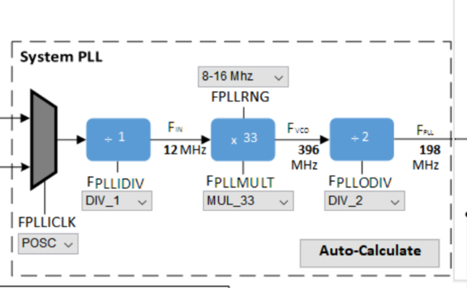
Figure 7. 198Mhz PLL Clock Generation for I2SC Peripheral
I2SC2 REFCLOCK01 Configuration
The I2S master the MCLK to approximate 12.288Mhz. This is sourced the Reference Clock #1 as shown below.
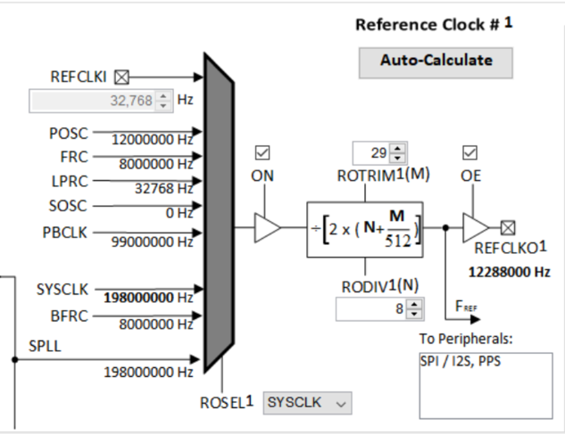
Figure 7. Reference Clock Generation for I2S Master Peripheral Configuration
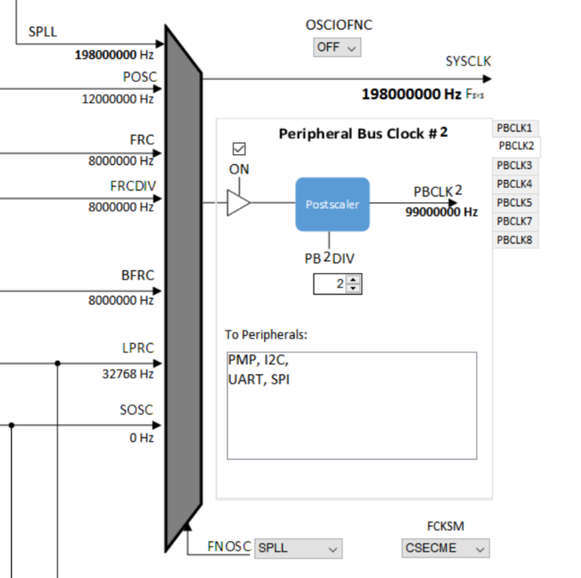
Figure 8. Peripheral Clock Generation
Harmony Code Generation
All the needed drivers, middleware, libraries and application framework code can be generated from the MHC blocks (MHC components) placed in the MHC Project Graph,
The generated framework code is placed under the firmware/src/config directory under the name of the configuration used for the Harmony 3 project. The initial application code is located in the firmware/src directory app.c and app.h files, which utilize the framework drivers, middleware and library APIs located in definitions.h located in the config directory.
All Harmony applications first execute the SYS_Initialize function, located in initialization.c. This is executed from the main function to initialize various subsystems such as the clock, ports, BSP (board support package), codec, usb, timers, and interrupts. The application APP_Initialize function in app.c is executed last in the generated SYS_Initialize routine after the system initializations have completed.
The SYS_Tasks function (located in tasks.c) is used to update the USB subsystems, WM8904 driver, timers etc., as well as the application state machine (APP_tasks routine in app.c). This function is executed from the main polling loop. The polling loop either execute SYS_Tasks repeatably in the infinite loop to perform the updates, or it the updates occur as separate processes executed at fixed time intervals using an RTOS schedular.
The application utilizes a simple state machine (APP_Tasks executed from SYS_Tasks) with the following functions
- 1.
Setup the drivers and USB Library interface
- 2.
Respond to USB Host control commands (“Attach”, “Detach”, “Suspend”)
- 3.
Initiate and maintains the bidirectional data audio streaming for the "USB Playback" function.
- 4.
Sense Volume control button pushes and set LED status lights
Building the Application
This section identifies the MPLAB X IDE project name and location and lists and describes the available configurations for the demonstration.
Description
The parent folder for these files is audio/apps/usb_headset. To build this project, you must open the audio/apps/usb_headset/firmware/*.X project file in MPLAB X IDE that corresponds to your hardware configuration.
** MPLAB X IDE Project **
This table lists the name and location of the MPLAB X IDE project folder for the demonstration.
MPLAB X IDE Project Configurations
This table lists and describes the supported configurations of the demonstration, which are located within ./firmware/src/config.
| Project Name | BSP Used | Description |
|---|---|---|
| uh_pic32mz_ef_c2_ ak4954 | pic32_mz_ef_c2 | This demonstration runs on the PIC32 MZ EF Curiosity 2 board with the AK4954 Codec. |
Configuring the Hardware
This section describes how to configure the supported hardware.
Using the PIC32 MZ EF Curiosity 2 and the AK4965 Daughter Board:
The PIC32 MZ EF Curiosity board and the AK4954 Audio Codec Daughter Board only requires the AK4954 Codec Daughterboard to be connected to X32 Header 2 as shown below. No jumper settings are required.

Figure 9. PIC32 MZ EF Curiosity 2 Board Setup
AK4954 Audio Codec Daughter Board on PIC32 MZ EF Curiosity 2 board setup. Headphone Out Jack is green. Microphone In Jack is pink._
Connect headphones to the green HP OUT jack of the Codec Daughter Board (as shown in the Figure above). The onboard microphone (AK4954 Daughterboard) will be used for the audio input.
As shown, the PIC32 MZ EF Curiosity will be programmed through the USB cable connected to the PKOB4 micro-mini connector. Program debug can also be performed over USB this connection.
Running the Demonstration
This section demonstrates how to run the demonstration.
Description

Important! Prior to using this demonstration, it
is recommended to review the MPLAB Harmony 3 Release Notes for any known issues.
Compile and program the target device. While compiling, select the appropriate MPLAB X IDE project. Refer to Building the Application for details
Do the following to run the demonstration:
- 1.
Configure the hardware, as described in the previous section, for the selected MPLAB-X project.
- 2.
Connect power to the board, compile the application and program the target device. Run the device. The system will be in a waiting for USB to be connected (LED1 off).
- 3.
Connect to the USB Host via the micro-mini connector (see Configuring the Hardware).
- 4.
Allow the Host computer to acknowledge, install drivers (if needed), and enumerate the device. No special software is necessary on the Host side. LED1 will blink after enumeration. It will continue to blink until the Harmony USB Speaker is selected as the speaker device, and the audio stream is started. It will then turn a solid color.
- 5.
If needed, configure the Host computer to use the usb_headset as the selected audio recording device. For Windows, this is done in the "Recording" tab in and the "Playback" tab of the "Sound" dialog"
Note: selection for Both Windows 10 and Windows 7 sound dialog is accessed by right
clicking the loudspeaker icon in the taskbar, which will bring up a menu for the
selection. This is shown in the Figure below for selecting the playback device.
The record device selected from the "Recording" tab in the same way.
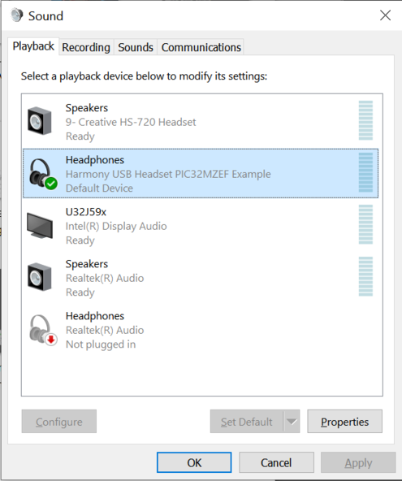
Figure 12. Windows 10 - Sound Dialog Showing Harmony USB Headset Selection.
Note: The device "Harmony USB Headset PIC32MZEF
Example" should be available along with a sound level meter indication audio
when playing. If no sound level is registering or the name of the Harmony speaker
is incorrect, uninstall the driver using the Windows Device Manager,
since it may have incorrect configuration set by a similar connection to one
of the other MPLAB-X Harmony Audio Demos.
- 1.
Open a playback/record application (such as Skype, or Audacity) and initiate playback and record through the USB Headset. LED 2 should be a solid color.
- 2.
Playback of audio should demonstrate that the audio is being heard in the USB Headset headphones.
- 3.
Volume can be change by repeated press of SW1. Volume will increase to maximum. It will then mute the speaker (LED1 will fast blink during mute) and then start increasing from minimum volume to maximum after more presses of SW1. NOTE: Volume is also controlled using the PC volume control and the Windows Media Player volume control.,
- 4.
Recording should also take place through the AK4954 on-board microphone. This should be seen when speaking on the "Sound Dialog"/Recording sound level meter of the USB Headset device. Actual audio can be recorded via the recording function of Audacity or the Connection Test feature of Skype.